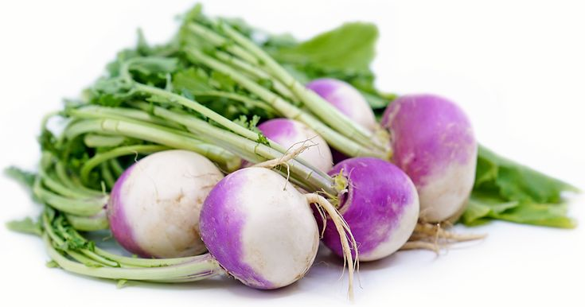

Brocoli
Vibrant, and incredibly nourishing, our organic broccoli is a powerhouse of fresh flavor and vital nutrients. Featuring dense, deep-green florets and tender, crunchy stalks, this essential vegetable brings a clean, earthy sweetness to your kitchen. Cultivated in rich, chemical-free soil, it is the ultimate clean-eating staple that effortlessly elevates your weekday stir-fries, cozy bakes, and fresh green bowls.Packed with a massive dose of vitamin C and antioxidants to keep your body strong.Rich in sulforaphane, a potent compound known to protect cells and support long-term wellness.High in vitamin K and essential fiber to protect your bones and help maintain healthy cholesterol.Delivers gentle dietary fiber that feeds your beneficial gut bacteria and keeps things moving.
Raddish
Crisp, zesty, and beautifully bright, our organic pink radishes add a delightful pop of color and a refreshing, peppery crunch to your table. These vibrant globes offer a sharp, clean flavor that mellows into a subtle sweetness when cooked. Perfectly pulled from organic soil, they are low in calories but rich in hydration and skin-loving nutrients, making them the ultimate fresh garnish to wake up any dish.High in water content to keep you hydrated and feeling full without heavy calories.Contains unique plant compounds that support liver function and flush out toxins.Loaded with vitamin C and zinc to fight free radicals and encourage radiant skin.Provides gentle dietary fiber to keep your digestive system running smoothly.

Turnips
Earthy, and delightfully mild, our organic turnips are a versatile root vegetable that brings wholesome comfort to your table. Packed with essential nutrients and low in calories, they offer a subtle sweetness when cooked and a refreshing, radish-like crunch when eaten raw. Whether roasted to caramelized perfection, mashed as a low-carb potato alternative, or simmered in cozy autumn stews, they add hearty, clean nutrition to any dish.Extremely low in calories but high in moisture and fiber to keep you feeling full.Packed with dietary fiber to promote smooth digestion and a healthy gut.Rich in potassium, which helps maintain safe and healthy blood pressure levelsHigh in vitamin C to encourage natural collagen production and fight off sickness.
Black Kale
Deep, robust, and elegantly tender, our organic black kale—also known as Lacinato or Dinosaur kale—is the sophisticated choice for your daily greens. Featuring striking, dark blue-green wrinkled leaves and a complex, earthy flavor that is noticeably sweeter and milder than traditional curly kale, this ancient Italian heirloom is a true culinary treasure. It holds its texture beautifully, whether sliced into delicate ribbons for a gourmet salad or slowly braised in a savory broth.Offers a less bitter, slightly nutty taste that is perfect for those new to greens.Brimming with deep plant pigments that protect your cells and support youthful vitality.Rich in plant-based iron and vitamins to help fight fatigue and keep you energized.High in dietary fiber to gently cleanse your digestive tract and keep your gut happy.
Curly Kale
Hearty, and intensely nutritious, our organic curly kale is the ultimate green superfood to revitalize your daily diet. With its beautifully ruffled leaves and deep, earthy flavor, this robust green is a powerhouse of essential vitamins, minerals, and cell-protecting antioxidants. Whether baked into crunchy chips, blended into a morning smoothie, or massaged for a tender salad, it delivers a fresh, clean boost of vitality to every meal.One of the most vitamin-packed foods on earth, loaded with vitamins A, K, and C.High in natural sulfur and fiber to help cleanse your system and aid digestion.Packed with lutein and zeaxanthin to protect your eyes and support a healthy cardiovascular system.Contains excellent plant-based calcium and vitamin K to keep your bones strong and resilient.
Red Cabbage
Bold, vibrant, and bursting with flavor, our organic red cabbage adds a beautiful pop of color and a crisp, peppery crunch to your meals. This colorful superfood is packed with cell-protecting antioxidants, gut-loving fiber, and essential vitamins. Whether sliced thin for a colorful salad, braised with apples for a savory side, or pickled for a tangy topping, it delivers a fresh, sweet crunch with every bite.Contains essential vitamin K and calcium to help maintain strong, healthy bones.Rich in dietary fiber to improve digestion and support a happy, healthy microbiome.Packed with anthocyanins, the powerful pigments that support heart and brain health.
White Cabbage
Crunchy, sweet, and versatile, our organic white cabbage is a kitchen staple packed with crisp texture and deep nourishment. This budget-friendly superfood is loaded with protective antioxidants, gut-friendly fiber, and immune-boosting nutrients. Whether shredded for a crisp slaw, fermented into homemade sauerkraut, or simmered in comforting winter stews, it brings a clean, fresh sweetness to your table.Rich in sulfur and antioxidants that support clear, glowing skin from within.Incredibly light and nutrient-dense, making it perfect for weight management.High in vitamin C to help protect your body and boost energy.
Mustard Greens/Tsunga
Revitalize your meals with our crisp organic mustard greens, a peppery super-green bursting with bold flavor and immune-boosting vitamins A, C, and K. These vibrant, nutrient-dense leaves bring a delightful, zesty kick and a powerful dose of antioxidants to your plate. Perfect for conscious eaters, they add a fresh crunch to raw salads, sauté beautifully with garlic and olive oil, or bring deep flavor to your favorite warm soups. Grown organically without any toxic chemical sprays or artificial pesticides.Contains essential fiber and nutrients that support healthy cholesterol levelsLoaded with natural antioxidants for clear skin and cellular health.Packed with vitamins A, C, and K to protect your body.